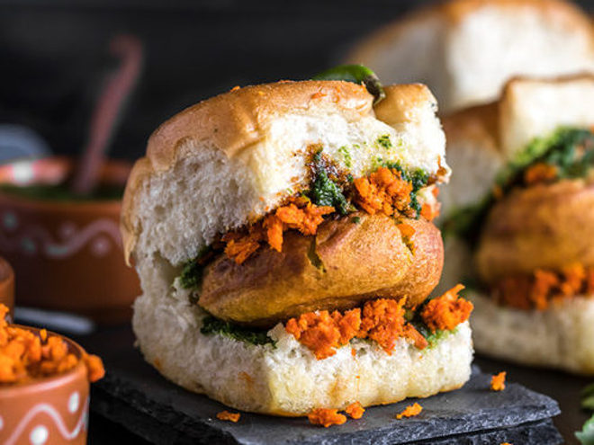

Vada Pav is a beloved street food of Mumbai, often referred to as the "Indian Burger." This simple yet flavorful snack consists of a spicy potato fritter (vada) sandwiched between a soft bread roll (pav) and is accompanied by a variety of chutneys and fried green chilies. It is a perfect example of how minimal ingredients can create a culinary marvel that has captured the hearts of millions.
The heart of the Vada Pav is the crispy vada made with mashed potatoes, seasoned with aromatic spices, mustard seeds, curry leaves, and green chilies. This mixture is shaped into balls, dipped in a gram flour batter, and deep-fried to golden perfection. The pav, typically slathered with tangy and spicy chutneys, acts as a soft and fluffy vehicle for the vada.
Vada Pav is more than just a snack; it's a cultural icon that represents the bustling streets of Mumbai. Whether it's a quick bite on the go or a comforting snack with tea, this humble dish brings joy and satisfaction with every bite.
Vada Pav Recipe
Ingredients
For the Potato Vada:
- 4 medium-sized potatoes (boiled and mashed)
- 2 green chilies (finely chopped)
- 1 tsp mustard seeds
- 8-10 curry leaves
- 1/2 tsp turmeric powder
- Salt to taste
- 1 tbsp oil
For the Batter:
- 1 cup gram flour (besan)
- 1/4 tsp turmeric powder
- A pinch of baking soda
- Salt to taste
- Water (as needed for batter)
For Assembly:
- 6 pav (bread rolls)
- Green chutney
- Sweet tamarind chutney
- Dry garlic chutney (optional)
- Fried green chilies (optional)
Instructions
Step 1: Prepare the Potato Mixture
- Heat oil in a pan. Add mustard seeds and let them splutter.
- Add curry leaves, chopped green chilies, and turmeric powder. Sauté for a minute.
- Add the boiled and mashed potatoes, salt, and mix well. Cook for 2-3 minutes.
- Let the mixture cool and shape it into small balls.
Step 2: Prepare the Batter
- In a mixing bowl, combine gram flour, turmeric powder, baking soda, and salt.
- Add water gradually to make a thick, smooth batter.
Step 3: Fry the Vada
- Heat oil in a deep pan for frying.
- Dip each potato ball into the gram flour batter, ensuring it is evenly coated.
- Carefully drop it into the hot oil and fry until golden brown. Remove and drain on a paper towel.
Step 4: Assemble the Vada Pav
- Slice the pav horizontally without cutting all the way through.
- Spread green chutney and tamarind chutney on the inner sides of the pav.
- Place a hot vada in between and press gently.
- Serve with fried green chilies and enjoy!
Serving Suggestions
Vada Pav is best enjoyed fresh and hot with a side of green chutney, tamarind chutney, or a sprinkle of dry garlic chutney. Pair it with masala chai for a truly satisfying experience.